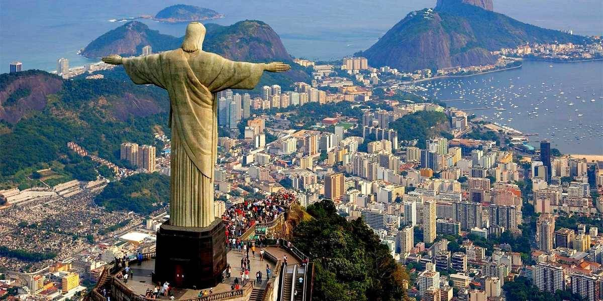
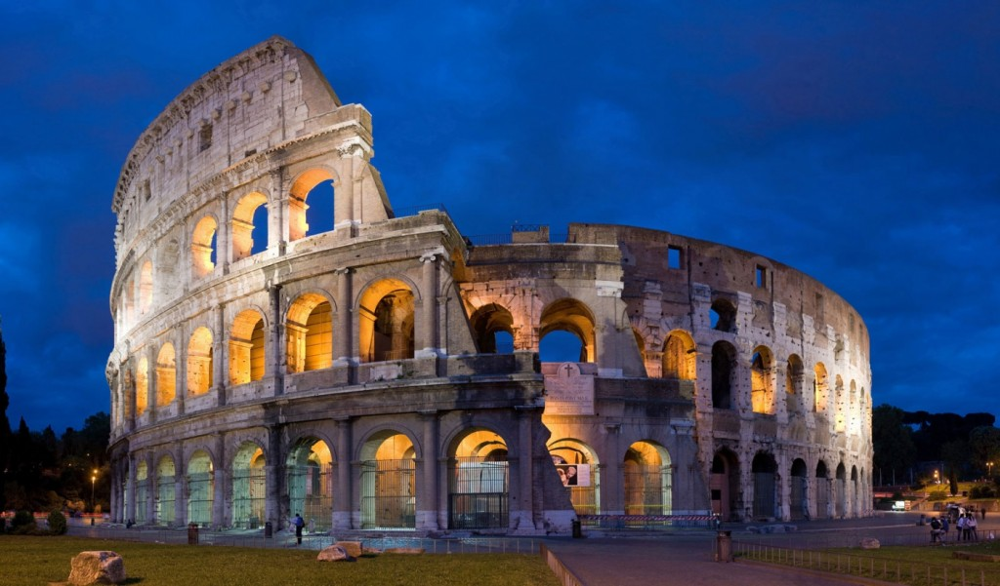
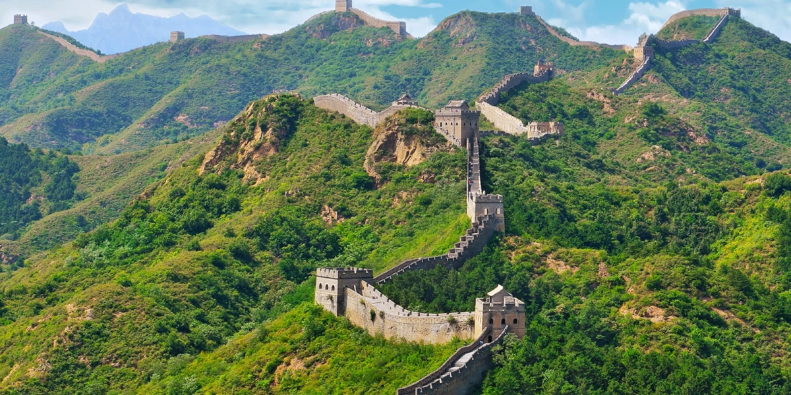

Image Gallery
Machu Picchu, Perú (h. 1450)

Estatua de Cristo Redentor, Brasil (1931)
El Coliseo romano, Italia (72-80)
La Gran Muralla China, China (VII a.C.-XVI d.C.)
Taj Mahal, India (1631-1653)

Chichén Itzá, México (IX-XII)